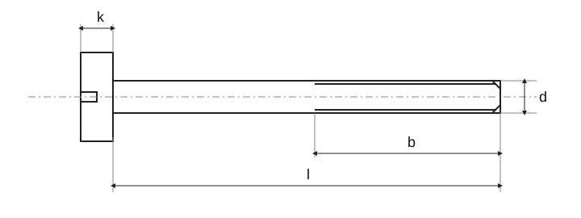

Винты с большой цилиндрической головкой — класс A · Ориентировочные массы
Исторический источник; числовые значения и исключения не полностью сверены с действующим стандартом.

Винты с большой цилиндрической головкой — класс A · Ориентировочные массы · 2–8 · M1,6 [kg/1000] / (M3,5) [kg/1000]
| l | Δl | M1,6 [kg/1000] | M2 [kg/1000] | M2,5 [kg/1000] | M3 [kg/1000] | (M3,5) [kg/1000] |
|---|---|---|---|---|---|---|
| 2 | 0,2 | 0,075 [F] | — | — | — | — |
| 2,5 | 0,2 | 0,081 [F] | 0,152 [F] | — | — | — |
| 3 | 0,2 | 0,087 [F] | 0,161 [F] | 0,281 [F] | — | — |
| 4 | 0,24 | 0,099 [F] | 0,180 [F] | 0,311 [F] | 0,463 [F] | — |
| 5 | 0,24 | 0,110 [F] | 0,198 [F] | 0,341 [F] | 0,507 [F] | 0,825 [F] |
| 6 | 0,24 | 0,122 [F] | 0,217 [F] | 0,371 [F] | 0,551 [F] | 0,885 [F] |
| 8 | 0,29 | 0,145 [F] | 0,254 [F] | 0,431 [F] | 0,639 [F] | 1,00 [F] |
| 10 | 0,29 | 0,168 [F] | 0,292 [F] | 0,491 [F] | 0,727 [F] | 1,12 [F] |
| 12 | 0,35 | 0,192 [F] | 0,329 [F] | 0,551 [F] | 0,816 [F] | 1,24 [F] |
| 14 | 0,35 | 0,215 [F] | 0,366 [F] | 0,611 [F] | 0,904 [F] | 1,36 [F] |
| 16 | 0,35 | 0,238 [F] | 0,404 [F] | 0,671 [F] | 0,992 [F] | 1,48 [F] |
| 20 | 0,42 | — | 0,478 [F] | 0,792 [F] | 1,170 [F] | 1,72 [F] |
| 25 | 0,42 | — | — | 0,942 [F] | 1,390 [F] | 2,02 [F] |
| 30 | 0,42 | — | — | — | 1,610 [F] | 2,32 [F] |
| 35 | 0,5 | — | — | — | — | 2,62 [F] |
| 40 | 0,5 | — | — | — | — | — |
| 45 | 0,5 | — | — | — | — | — |
| 50 | 0,5 | — | — | — | — | — |
| 55 | 0,95 | — | — | — | — | — |
| 60 | 0,95 | — | — | — | — | — |
| 65 | 0,95 | — | — | — | — | — |
| 70 | 0,95 | — | — | — | — | — |
| 75 | 0,95 | — | — | — | — | — |
| 80 | 0,95 | — | — | — | — | — |
Винты с большой цилиндрической головкой — класс A · Ориентировочные массы · 2–8 · M4 [kg/1000] / M10 [kg/1000]
| l | Δl | M4 [kg/1000] | M5 [kg/1000] | M6 [kg/1000] | M8 [kg/1000] | M10 [kg/1000] |
|---|---|---|---|---|---|---|
| 2 | 0,2 | — | — | — | — | — |
| 2,5 | 0,2 | — | — | — | — | — |
| 3 | 0,2 | — | — | — | — | — |
| 4 | 0,24 | — | — | — | — | — |
| 5 | 0,24 | 1,16 [F] | — | — | — | — |
| 6 | 0,24 | 1,24 [F] | 2,12 [F] | — | — | — |
| 8 | 0,29 | 1,39 [F] | 2,37 [F] | 4,02 [F] | — | — |
| 10 | 0,29 | 1,55 [F] | 2,61 [F] | 3,37 [F] | 9,38 [F] | — |
| 12 | 0,35 | 1,70 [F] | 2,86 [F] | 4,72 [F] | 10,0 [F] | 18,2 [F] |
| 14 | 0,35 | 1,86 [F] | 3,11 [F] | 5,10 [F] | 10,06 [F] | 19,2 [F] |
| 16 | 0,35 | 2,01 [F] | 3,36 [F] | 5,45 [F] | 11,2 [F] | 20,2 [F] |
| 20 | 0,42 | 2,32 [F] | 3,65 [F] | 6,14 [F] | 12,6 [F] | 22,2 [F] |
| 25 | 0,42 | 2,71 [F] | 4,47 [F] | 7,01 [F] | 14,1 [F] | 24,7 [F] |
| 30 | 0,42 | 3,10 [F] | 5,09 [F] | 7,90 [F] | 15,7 [F] | 27,1 [F] |
| 35 | 0,5 | 3,48 [F] | 5,71 [F] | 8,78 [F] | 17,3 [F] | 29,7 [F] |
| 40 | 0,5 | 3,87 [F] | 6,32 [F] | 9,66 [F] | 18,9 [F] | 32,2 [F] |
| 45 | 0,5 | — | 6,94 | 10,5 | 20,5 | 34,7 |
| 50 | 0,5 | — | 7,56 | 11,4 | 22,1 | 37,2 |
| 55 | 0,95 | — | — | 12,3 | 23,7 | 39,7 |
| 60 | 0,95 | — | — | 13,2 | 25,3 | 42,2 |
| 65 | 0,95 | — | — | — | 26,9 | 44,7 |
| 70 | 0,95 | — | — | — | 28,5 | 47,2 |
| 75 | 0,95 | — | — | — | 30,1 | 49,7 |
| 80 | 0,95 | — | — | — | 31,7 | 52,2 |